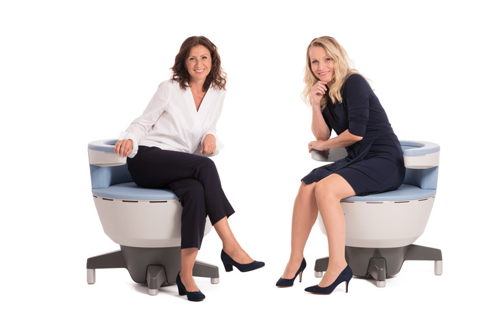

The Revolutionary Pelvic Floor Solution
Emsella is the first FDA-cleared device for treating urinary incontinence and strengthening pelvic floor muscles. In just 28 minutes, fully clothed and sitting comfortably, you'll experience thousands of supramaximal pelvic floor contractions — equivalent to doing 11,000 Kegel exercises.

95%
Patient Satisfaction Rate
75%
Reduction in Pad Usage
67%
Improvement in Quality of Life